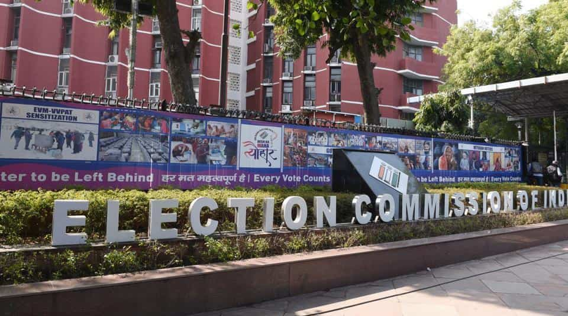
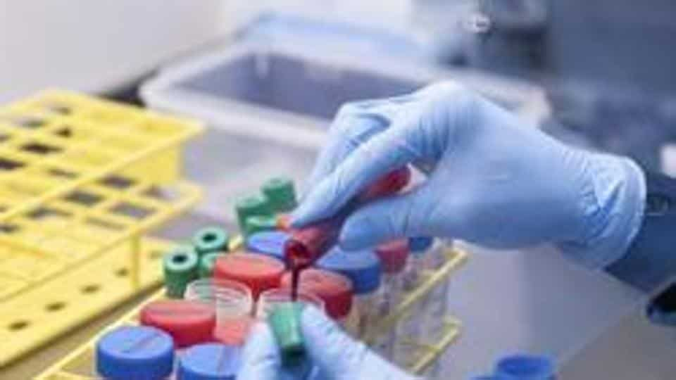

Date:
Eight assembly seats vacant in Uttar Pradesh, EC to decide on bypolls
Uttar Pradesh may witness a mini-assembly election of sorts in the coming months if the Election Commission (EC) decides to hold bypolls to eight vacant seats in the state assembly along with the Bihar elections. Five of these eight seats fell vacant after the death of sitting members. “The Election Commission of India has to take a call about holding by-polls to the eight assembly seats. As of now, we have no information about the possible timing of the bypolls,” said a senior officer. A bypoll to a vacant seat in the state assembly is generally held within six months from the date of vacancy. However, EC has not yet given any indication about holding these bypolls. “For seats, where the six-month time period is complete, EC has given a certificate, saying a decision about holding the bypoll there will be taken later,” said the officer.
WHO’s global COVAX plan: All you need to know about Covid-19 vaccine access plan
The World Health Organization (WHO) on Monday said some 172 countries are engaging with the COVAX facility designed to ensure equitable access to Covid-19 vaccines, but more funding is needed and countries need to make binding commitments. The WHO had earlier urged countries to join a global pact aimed at ensuring less wealthy countries have access to Covid-19 vaccines, warning about the risks from so-called ‘vaccine nationalism.’ WHO director general Tedros Adhanom Ghebreyesus has said initially, when there will be limited supply of Covid-19 vaccines, it’s important to provide the vaccine to those at highest risk around the globe. He said this included health workers on the front lines of the pandemic, who were “critical to saving lives and stabilising the overall health system”.